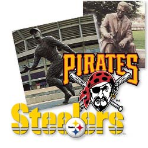
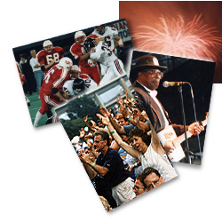

Events
Sports
Located in a city rich in sports tradition, Three Rivers Stadium has been home to the Pittsburgh Pirates and Steelers since 1970. Names like Art Rooney, Sr., Chuck Noll, Roberto Clemente, Willie Stargell, Terry Bradshaw and Franco Harris echo through the concourses. Memories of the Immaculate Reception, live in the stadium as well as the hearts of the fans.
Music

Internationally acclaimed musicians including Bruce Springsteen, U2, The Rolling Stones, Billy Joel and Elton John have performed to sell-out crowds at Three Rivers Stadium. In addition, a variety of other concerts outside the stadium are performed on the Wendy's Classic Stage in conjunction with antique fairs, Pirates games and festivals.
Special Events
Not only is Three Rivers home to the Pittsburgh Pirates and Steelers, it functions as the area's largest and most completely equipped outdoor meeting venue. The stadium has been used for a broad range of special events including The Billy Graham Crusade, "Porkstock", a celebration of Porky Chedwick's 50th anniversary in radio, specialty auto shows, and championship football games. The Coors Light Three Rivers Rib and Music Festival attracts thousands to Three Rivers Stadium each summer. Oldies shows, featuring local and national acts, continue to fill the stands to capacity. "Porkstock", a celebration of Do-Wop music, classic cars, etc. that started with Porky Chedwick's 50th anniversary, included music, food, car cruises, a drive-in movie and more. The world premiere of Angels in the Outfield was viewed by 38,000 fans on the weekend of the 1994 Baseball All-Star Game.